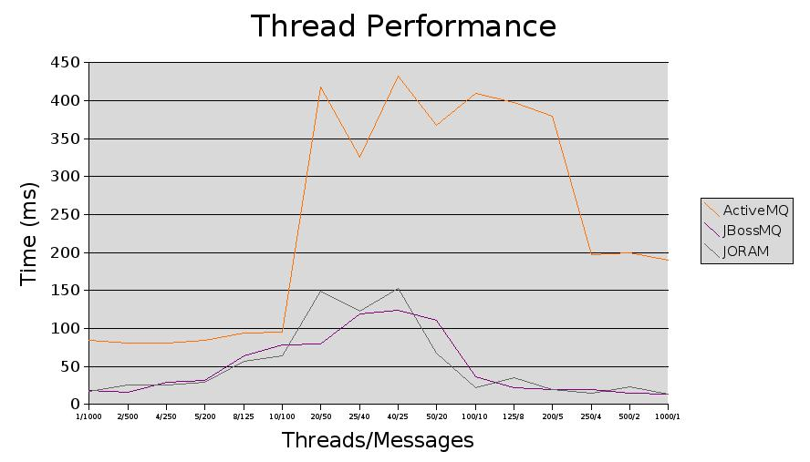

Index
Messaging Infrastructure Thread Tests
This page outlines some thread testing done on each messaging system.
It was intended to see how well the messaging infrastructure copes with
having multiple threads each with multiple messages.
The tests had the following parameters:
- The request-reply echo scenario was used.
- No persistence was used by the messaging systems.
- 1000 messages were sent in each test with varying number of
threads.
- Only the consumer handler requester was
tested as the future results handler cannot handle multiple threads.
- The times recorded are the number of milliseconds the QueueManager.sendMessage method
took.
No. of Threads/No. of Messages
Per Thread
|
ActiveMQ |
JBossMQ |
JORAM
|
| 1/1000 |
84
|
18
|
17
|
| 2/500 |
81
|
16
|
25
|
| 4/250 |
81
|
29
|
25
|
| 5/200 |
84
|
31
|
29
|
| 8/125 |
94
|
64
|
57
|
| 10/100 |
95
|
78
|
64
|
| 20/50 |
418
|
79
|
149
|
| 25/40 |
325
|
119
|
123
|
| 40/25 |
432
|
124
|
153
|
| 50/20 |
367
|
111
|
68
|
| 100/10 |
410
|
36
|
22
|
| 125/8 |
397
|
22
|
35
|
| 200/5 |
380
|
19
|
20
|
| 250/4 |
197
|
20
|
15
|
| 500/2 |
199
|
15
|
23
|
| 1000/1 |
190
|
14
|
14
|
The messaging infrastructure coped very well with the multiple threads
for all the messaging systems tested.

Index